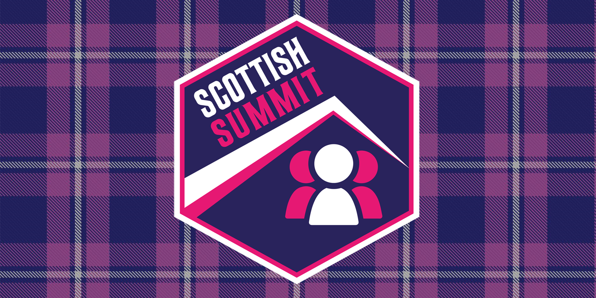

Maker Space - 30th August 2023
30th August 2023

Welcome Wednesday at MakerSpace was great with a few new people looking around and
hopefully some new members to come in and create or work on some amazing new projects. I was able to order and locate the replacement part I needed for my
3D Printer so proceeded to replace the extruder with the brand new one I had received and I also took the opportunity to change the filiment colour
from blue to white. I also got some new masking tape to put on the heatbed so if a print does get stuck, you can just peel it off, which has worked well in the
past, well after getting the 3D Printer back together I was able to get the filiment to come through. Unfortunately, it isn't quite printing
correctly, even after calibrating it but recall it took a while to get it started in the first place when I first got it working a few years ago so hopefully
next time I'm there I can get it working!
Welcome Wednesday is also a great chance to socialise and meet up with the members there, we often go to the pub although that week many were getting
food in but I and a few others decided to go along to the pub still and had a good chat there too! It is a great opportunity to chat to like-minded people and learn
about things there so whether it is in MakerSpace or Wetherspoons you'll certainly find something interesting to do, or get to see one of the amazing
projects other people are working on! So, if you can make it to Gateshead just next to the Tyne Bridge then you'll find
MakerSpace there and can visit on another Welcome Wednesday!
RoguePlanetoid Weekly Update #30
25th August 2023

Today I've published another Article to help celebrate the CESPage 25th Anniversary which is about Zune,
It seems appropriate to have posted that as have been working on my latest Presentation about Zune along with Windows Phone
which I've written a first draft of the content and will be putting together the slides soon! This post also marks the thirtieth RoguePlanetoid Weekly Update,
it is always great to say what I have been doing and what I am up to!
This week it was amazing to post that I have been nominated for the Community Rising Star Award at the Microsoft Technology UK Community and Partner Awards
for 2023! I shared this on LinkedIn and got an amazing level of support just from that so am hopeful that many of those will consider voting for me when
voting opens from 1st September and hopefully stand a good chance of making the short-list for the awards! I've never received any awards of any kind for my contributions to the community,
so even being considered will be a first for me and will hopefully represent not just myself but my region - the North East of England! Even if I don't win, I aim to do even more
for the tech community here in the North East of England and hopefully will get along to more events around the country too!
This time next week I will be releasing the next Episode of the RoguePlanetoid Podcast about Zunepedia,
although I'm doing it last minute again as haven't finished writing it yet, but will be doing that tomorrow and will also be recording and editing it over the weekend! I've been busy
with a few things recently but am hopefully going to go back to writing, recording and editing my Podcast well before release again!
Maker Space - 24th August 2023
24th August 2023
It was another Welcome Wednesday at MakerSpace and I was able to order a new part for
my 3D Printer that should arrive by the next time I go along, so should be able to get it back to full working order then and might even switch
to a different colour of filament by using White instead having previously used Blue and originally Red filament.
It was great to see what other projects people were working on which included some members putting together the Pipistrelle bat detector
that I had seen others putting together the last time I had been at MakerSpace and was also interested to see another project to flash the board of a
Dyson vaccuum cleaner that is quite sophisticated and used to determine battery status and perform other battery management tasks so get it to work with
any battery amongst other capabilities similar to those of a Raspberry Pi! It is great to see so many different projects and looking forward to doing something new
the next Welcome Wednesday!
Microsoft Technology UK Community and Partner Awards 2023 - Community Rising Star - Nominee
22nd August 2023
I am so honoured to have been nominated for the Community Rising Star Award at the Microsoft Technology UK Community and Partner Awards for 2023!
It is also great to see so many familiar names amongst the other categories such as Jamie Taylor for Best Podcast / YouTube Channel Award host of the The Modern .NET Show
and North East and Leeds based HaintonDotNet for Best User Group Award along with Ben Lee for the Modern Work Evangelist Award who I know of from when they were involved with NEBytes
also here in the North East!
Voting for all categories opens on 1st September 2023 and closes on 13th October 2023 and you can check out all of the Nominees
before then! The awards will be held from 7pm on 13th October 2023 at the Farnborough Conference and Exhibition Centre. I'm really looking forward to seeing who gets shortlisted
and even if I don't win on the night, it will be amazing to be considered amongst amazing members of the Microsoft Technology community for both Developers and IT pros!
RoguePlanetoid Weekly Update #29
18th August 2023
This week I was back at MakerSpace trying to fix my 3D Printer but it will need some
replacement parts before it starts printing again, while there it was good to see people putting together the Pipistrelle
which is a bat detector! It will be good to go along next time and maybe try a simpler version of a project and can aim for something like that in the future once I get use to putting
components together again along with practising soldering first!
This week I've started to pull together bits and pieces for my next presentation about Zune and Windows Phone and will be making a start on
writing and putting it together, not only will this be a non-programming topic but will also push my skills as won't be using any speaker notes to deliver the presentation,
although will have a few slides! I'll also be putting together the next Episode of the RoguePlanetoid Podcast about Zunepedia
so am looking forward to that, is going to be a great month for nostalgia!
Next week I will be putting together the presentation itself about Zune and Windows Phone, it is great to collect together a few stories about them,
including some great insights! I'm hoping it will be interesting to those who don't know anything about them as well as anyone who might know something about them too,
I think it will be interesting to both and am looking forward to finishing putting it together, will spend time to make sure it is as good as it can possible be!
Maker Space - 17th August 2023
17th August 2023
It was great to be back at MakerSpace for another Welcome Wednesday to attempt to resurrect
my 3D Printer after it the last print resulted in the filament becoming tangled up inside. I was able to remove the filament however after a few attempts
to push anything through the extruder I failed, but thanks to help from Alistair who has more experience and expertise with them than I we were able to remove the extruder
head but it was blocked too much so will have to source a suitable replacement part for it but hopefully once I do that will get my 3D Printer working again!
Since I wasn't able to do much I decided to see what others were working on and was good timing as there was a project available for many of the members there to put together
which was a Bat Detector with the Pipistrelle This used a PCB with the layout for the components required
including resisters, capacitors, LEDs and a Raspberry Pi along with using solder paste that could be applied and then the components could be placed on the board. This could
then use a hot plate to connect the components securely to the board. It was amazing to see many of the parts of the process being carried out and even captured a few photos
of a few of the steps which you can see below:
It may not have been possible to use my 3D Printer this week at MakerSpace but it was amazing to see people putting together their
own Pipistrelle, although such a thing was probably way above my skill level, I think once I got used to a simpler project I might be able to give
it a go! Remember all are welcome during Welcome Wednesday so why not come along next time to MakerSpace!
RoguePlanetoid Weekly Update #28
11th August 2023
This week I had travelled down to Manchester for Scottish Summit as it was doing an On Tour Event there.
It was amazing to see how much Manchester had changed since the last time I had been there over a decade ago. Every session was really good and will help me shape
my own talks and sessions in the future. I'm hopeful to be able to become a speaker at an event such as Scottish Summit along with helping
represent the North East of England which is often underepresented at events in the UK.
Next week I will be writing the next episode of the RoguePlanetoid Podcast which will be about Zunepedia,
which was my project to create a Digital Coffee Table Book about Zune which I released almost two years ago and pushed my limited design skills to the limit - and beyond!
It is great to be able to do something for Zune again and along with a presentation I am also putting togtether about it and Windows Phone,
it is also great to remember the small parts I have played in the history of both those platforms!
If you listened to the latest Episode of the RoguePlanetoid Podcast about Good and Bad Developers,
you may have heard a big difference in the quality and volume of the Podcast. This is thanks to the amazing advice from Jamie Taylor
who is the host of the newly renamed The Modern .NET Show which used to be The .NET Core Show.
I appreciated the advice of this amazing fellow podcaster and recommend you check out their show with great interview with those in the .NET community,
many of which I know of and look up to as a developer. It is great to be part of a community that helps each other and know that help has resulted in a better sounding Podcast!
North East Coding Dojo - August 2023
9th August 2023
It was the second North East Coding Dojo for Software Crafters Newcastle hosted by Codurance
with many people returning along with many new people coming for the first time. It was hosted at TusPark which is run by a Chinese company
who support connections and events in Newcastle upon Tyne, there is a lot of innovation happening in the North East and is home to many
technology people and includes co-working space and 9th of August was national co-working day.
Three Rules of TDD - Robert C. Martin (“Uncle Bob”) provides a concise set of rules for practising TDD:
- Write production code only to pass a failing unit test
- Write no more of a unit test than sufficient to fail (compilation failures are failures)
- Write no more production code than necessary to pass the one failing unit test.
For this North East Coding Doji was based on the Kata for Roman Numerals which was
to convert Arabic Numbers into their Roman Numeral equivalents. Often you can follow TDD to a specific goal, but sometimes the knowledge of the
solution overtakes the tests. If you can't create a failing test, then the solution is complete and you can keep certain tests if they are no longer
necessary to make sure there are not any regressions later.
Scottish Summit 2023
6th August 2023

On Friday I headed down to Manchester for Scottish Summit that was being held at UA92.
You can read my Article about it at Scottish Summit 2023 - Conference that covers my notes from all the sessions I attended.
You can also read another Article about my experience there at Scottish Summit 2023 - Experience which talks about my journey
to Manchester and the other things I saw before attending the conference and some photographs I took from the day!
It was interesting attending Scottish Summit as all the sessions there were informative and well delivered and learned a few things,
including how I can improve my own talks in future along with other things I'll probably need to know about in the future, so it certainly was worth going
there and will be good to put some of those things into practice.
RoguePlanetoid Weekly Update #27
4th August 2023
This week saw the release of the latest Episode of the RoguePlanetoid Podcast about Good and Bad Developers
where I shared some stories I had heard about, experienced myself or been told by colleagues but with names excluded and details changed about good and bad developers! I'm hoping it will
inspire debate and help encourage people to be good developers and discourage them from being bad ones. Although it was another late recording and editing for that one so the next Episode
will hopefully avoid that!
This week I travelled down to Glasgow to help out with something that was happening there, can't say what it was just yet, other than to say it wasn't the UCI World Cycling Championships
which started the same day, as it turned out, so were glad had took the train as many roads were closed! Continuing the Scottish theme, as this is posted I'll be in Manchester for
the Scottish Summit which is happening this Saturday but you can already check out the talk I did for their YouTube Channel which
was about How Sharing Can Make You A Better Developer. I'm really looking forward to checking out the sessions and meeting people there!
Next week I'll be starting work on a brand-new presentation about Zune and Windows Phone which will push my abilities as a speaker to the maximum and hopefully be a great learning
experience that I can apply back to doing ones about software development! Luckily those two things are something I know a lot about anyway and have even played my part in both in some way!
This month I'm also looking forward to putting together the next Episode of the RoguePlanetoid Podcast, it will celebrate the second anniversary
of Zunepedia with a companion episode to the digital coffee table book I released in 2021. It is hard to believe it was two years ago
that it was released and look forward to adding an audio element to the rich photography and designs that I featured back then!
RoguePlanetoid Podcast - Episode Seven - Good and Bad Developers
1st August 2023

Today sees the release of Episode Seven of the RoguePlanetoid Podcast
about Good and Bad Developers. You may have encountered both good and bad developers,
be one or know one or have a bit of good or a bit of bad.
You will find the Podcast where you listen to your podcasts such as Spotify,
Amazon Music, RadioPublic, Apple Podcasts, Pandora
Google Podcasts along with YouTube where you can catch up with previous episodes
and Subscribe or Follow so you don't miss any future Episodes.